Ford Falcon
FG X · 2014–2016
Abstract
This generation of the Ford Falcon is a full-size car (E), built October 2014 – October 2016 in Australia: Melbourne, Victoria (Broadmeadows). Body styles: 4-door sedan, 2-door coupé utility, 2-door cab chassis utility. Layout: FR layout. Designed by Jordan Demkiw. This generation has its own article: Ford Falcon (FG X).
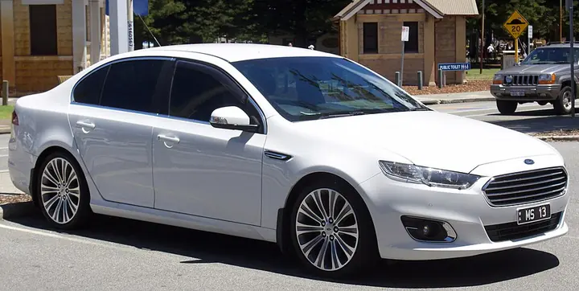
_G6E_Turbo_(2017-11-18)_01.jpg){kind=link}
1Specifications
| Production | October 2014 – October 2016 |
|---|---|
| Assembly | Australia: Melbourne, Victoria (Broadmeadows) |
| Designer | Jordan Demkiw |
| Class | Full-size car (E) |
| Body style | 4-door sedan2-door coupé utility2-door cab chassis utility |
| Layout | FR layout |
| Engine | Inline-four2.0 L EcoboostStraight-six4.0 L Barra 1954.0 L Barra EcoLPi4.0 L Barra 270T4.0 L Barra 325TV85.0 L Miami supercharged V8 |
| Transmission | 6-speed 6HP 21 automatic (I4, I6)6-speed 6HP 26 automatic (I6-T, V8)6-speed TR-6060 manual |
| Predecessor | Ford Falcon (FG) |
| Successor | Ford Mondeo (fourth generation)Ford Mustang (sixth generation)Ford Ranger (first generation) |
2Previous generations

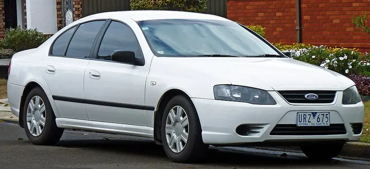
_XT_sedan_(2010-10-02).jpg){kind=link}
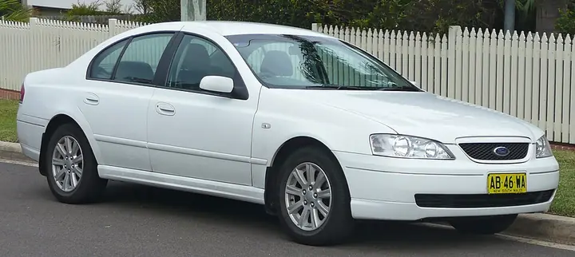
_Futura_sedan_(2010-06-17).jpg){kind=link}
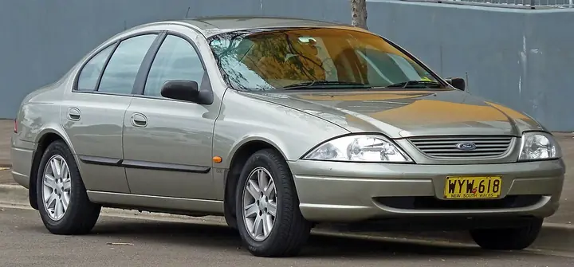
_Fort%C3%A9_sedan_(2010-07-10)_01.jpg){kind=link}
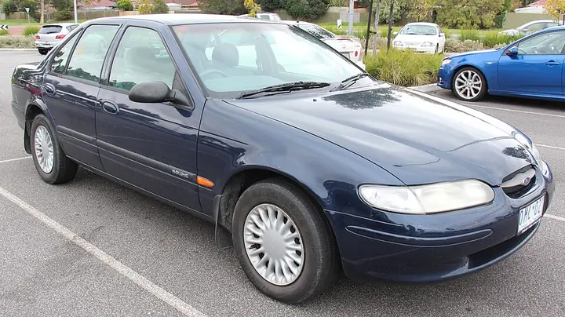
_GLi_sedan_(17670566466).jpg){kind=link}
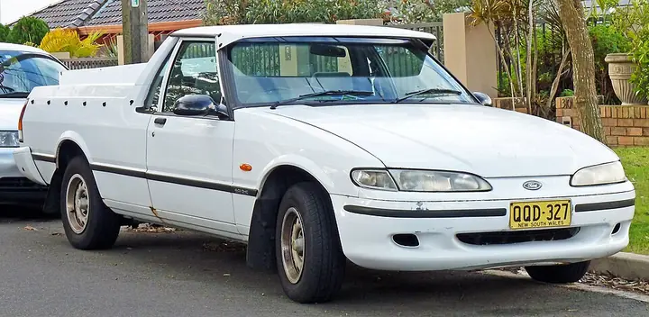
_Longreach_GLi_utility_(2010-07-08).jpg){kind=link}
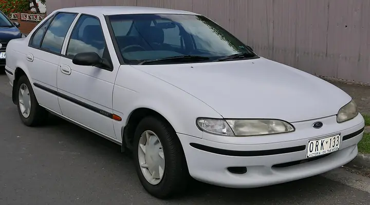
_GLi_sedan_(2015-11-13)_01.jpg){kind=link}
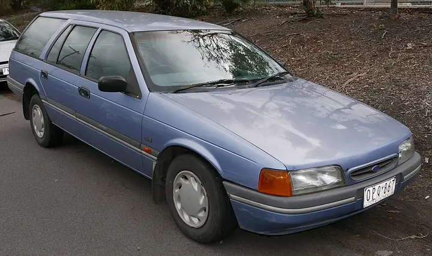
_GLi_station_wagon_(2015-06-25)_01.jpg){kind=link}
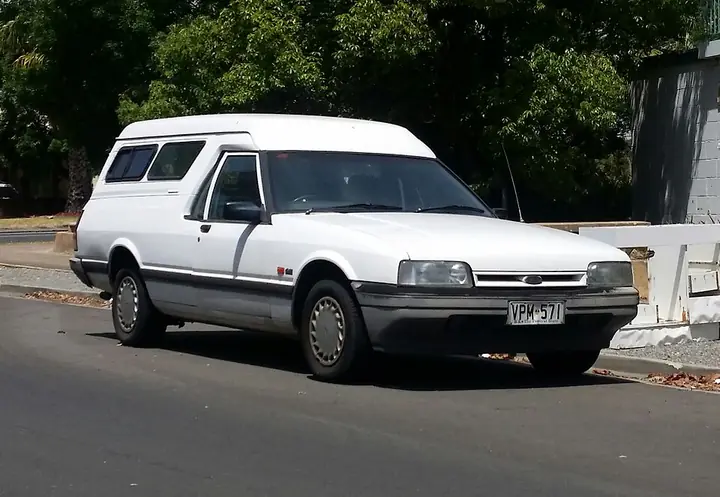
_Longreach_GLi_panel_van_(15602469221).jpg){kind=link}
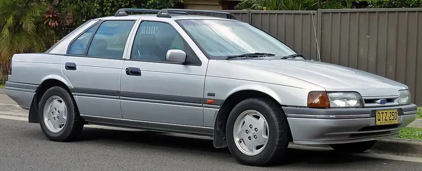

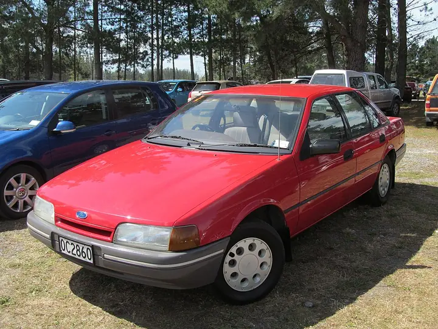
_(32091106556).jpg){kind=link}
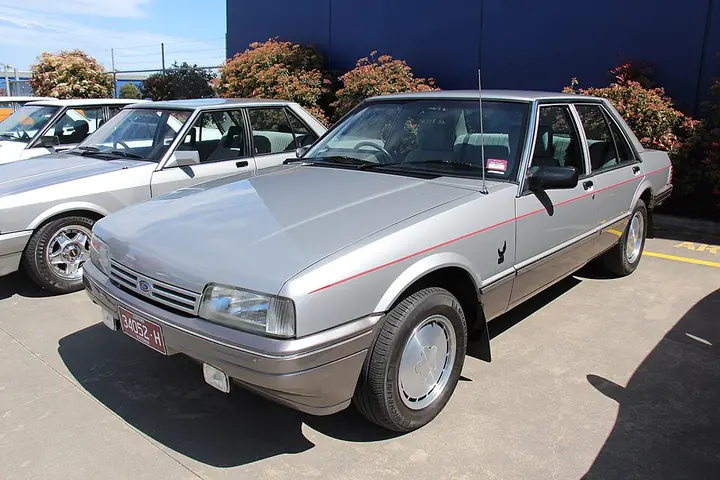
.jpg){kind=link}
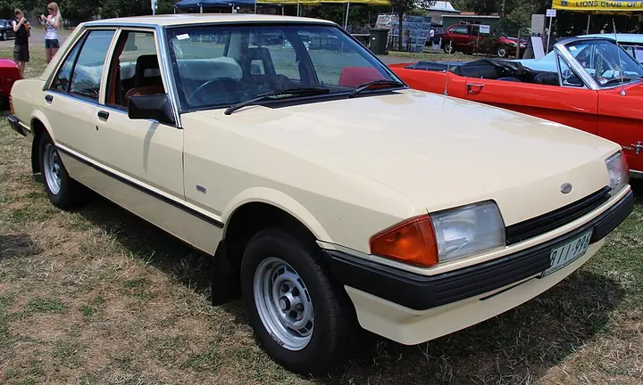
_GL_sedan_(2014-11-23).jpg){kind=link}
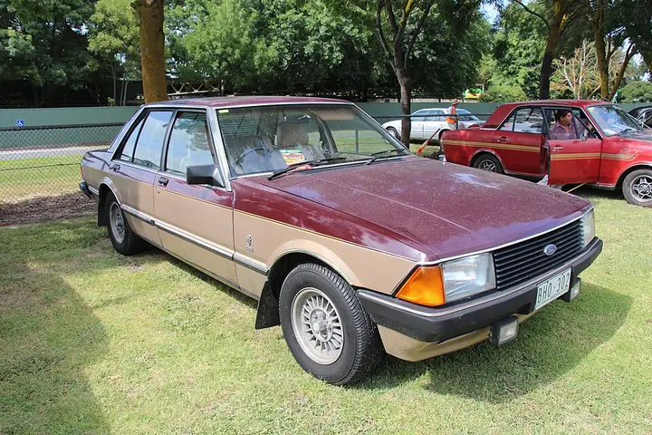

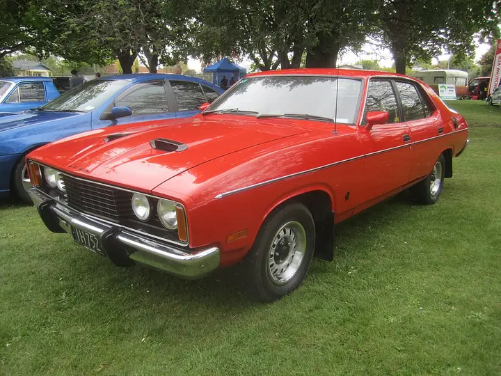
.jpg){kind=link}
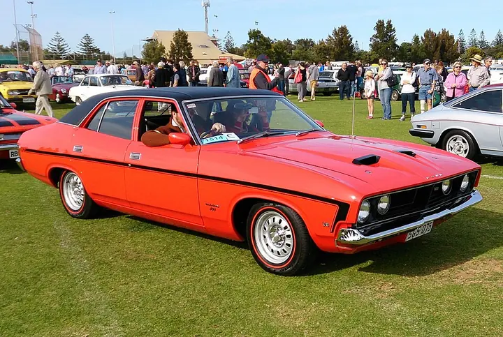
.jpg){kind=link}
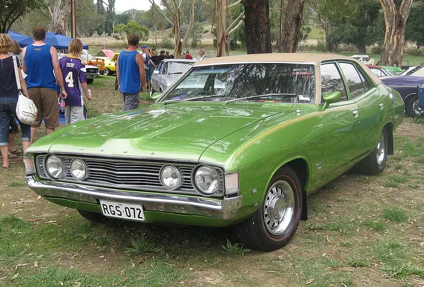

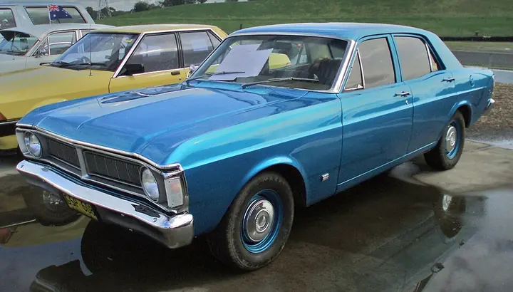
.jpg){kind=link}
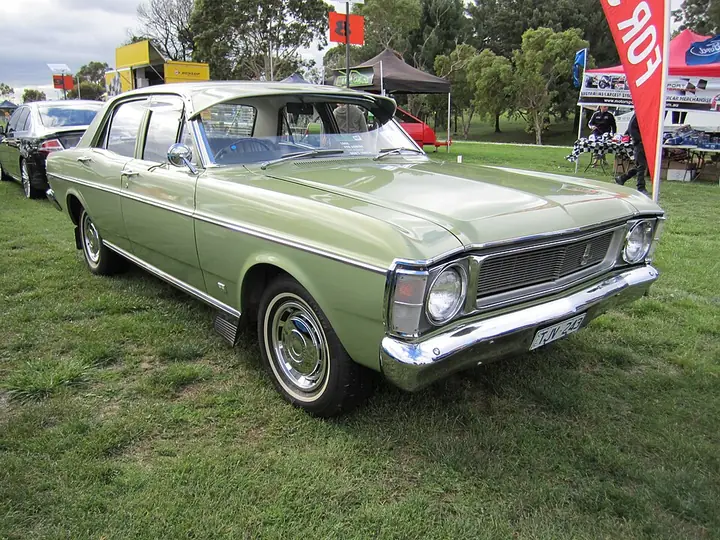

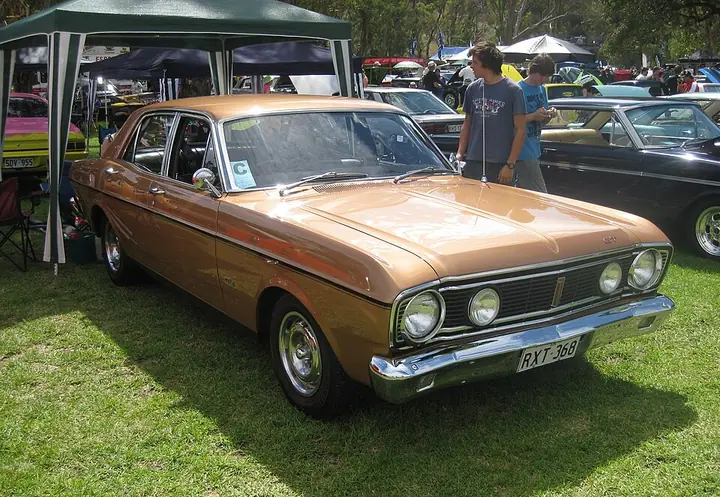

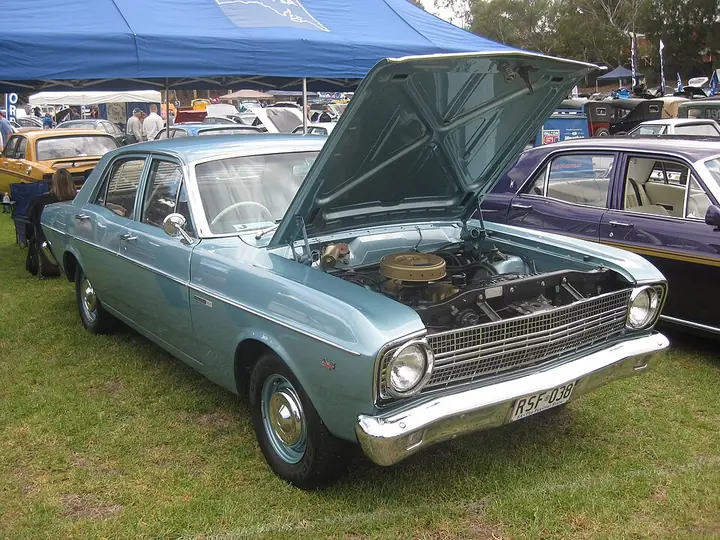
.JPG){kind=link}
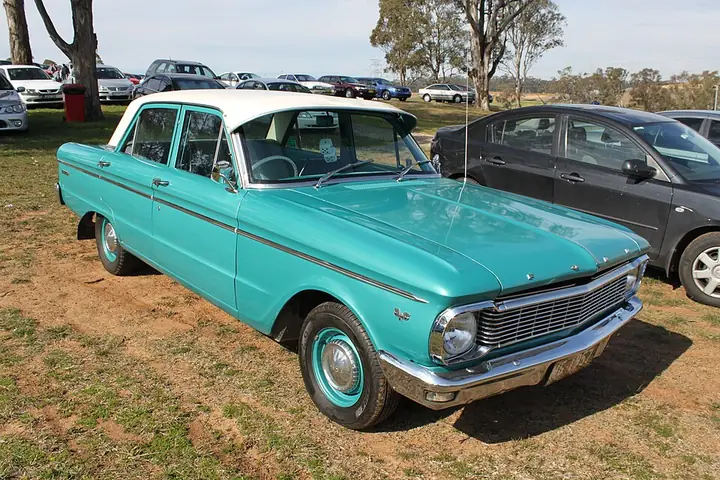
.jpg){kind=link}
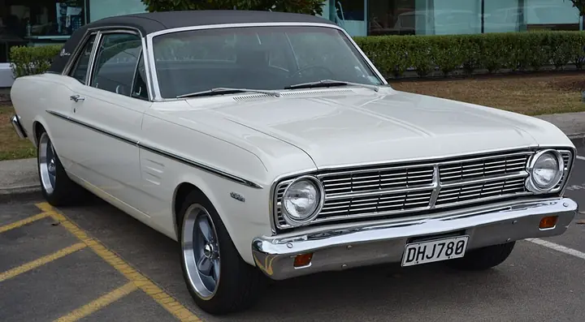
.jpg){kind=link}
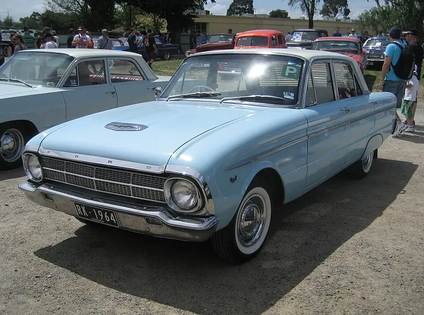

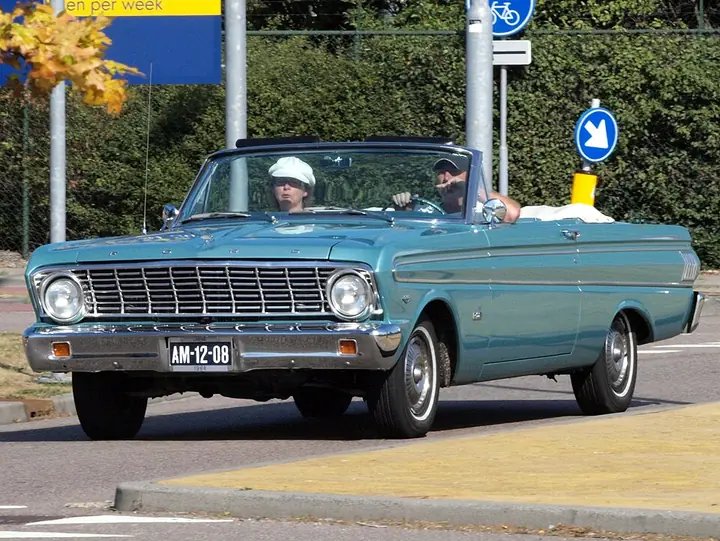

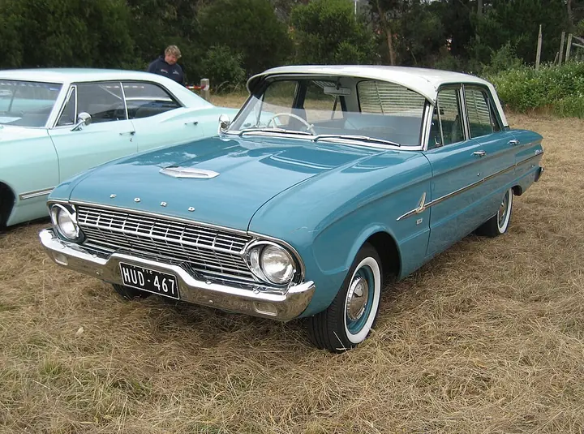

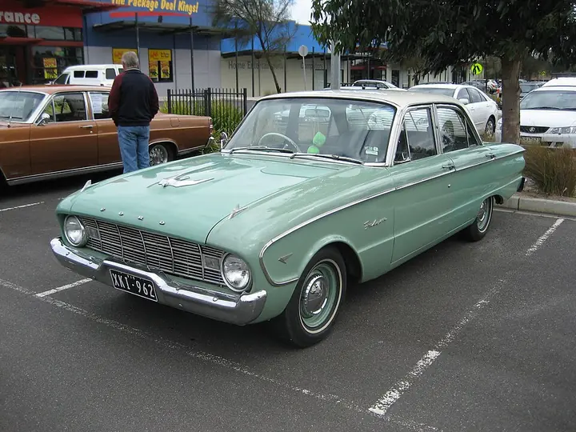

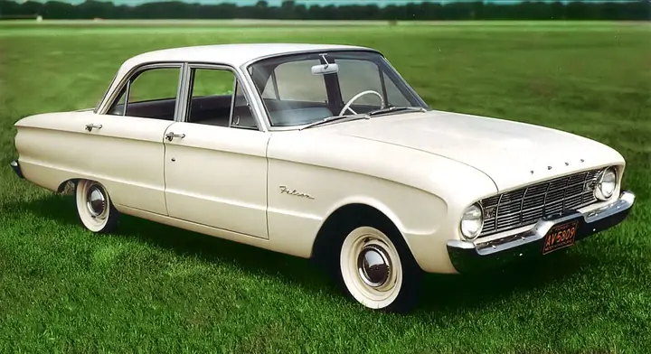

3Generation by generation
Length +8% from the first to the last
Weight +54% from the first to the last